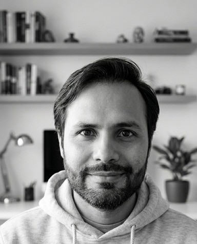

Michael Alvarez
.
Muestras
Casos
Habilidades
Trayectoria
Video con IA
Contacto
ES
EN
Descargar CV
Bogotá, Colombia
·
Social media manager
·
Estrategia de contenido, pauta digital y web
Social media manager. Antes de publicar,
averiguo quién es la marca
.
Ver casos
Descargar CV en PDF
MA

Disponible
Muestras de trabajo
Casos
06 proyectos · toque para abrir
Habilidades
Trayectoria
2018 — 2022
Video con inteligencia artificial
Piezas de concepto
✕
‹
›